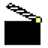
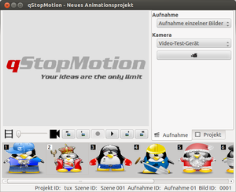
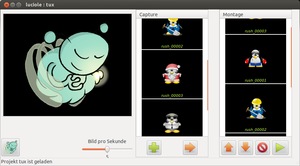

Stop-Motion
Zum Verständnis dieses Artikels sind folgende Seiten hilfreich:
Stop-Motion-Programme eignen sich, um aus vielen Einzelbildern eine Videodatei mit selbst bestimmten zeitlichem Abstand zwischen den einzelnen Bildern zu erstellen. Je mehr Frames pro Sekunde (Framerate, in fps) abgespielt werden, desto flüssiger läuft der Film. Dieser Effekt ist vielen als klassisches Daumenkino geläufig.
Programme¶
 
qStopMotion¶
Ein aktuelles Programm ist qStopMotion  , das Qt für die Programmoberfläche verwendet. Über SourceForge wird ein Fremdpaket
, das Qt für die Programmoberfläche verwendet. Über SourceForge wird ein Fremdpaket  angeboten. Alternativ kann auch Getdeb als Fremdquelle genutzt werden.
angeboten. Alternativ kann auch Getdeb als Fremdquelle genutzt werden.
Hinweis!
Fremdpakete können das System gefährden.
Anmerkung: Das Paket benötigt FFmpeg, das bei Ubuntu 14.04 in den offiziellen Paketquellen fehlt. Bis ein aktualisiertes Paket vorliegt, ist die Installation unter 14.04 nicht möglich. Evtl. hilft jedoch dieser Tipp weiter.
Nach dem Start wird zunächst ein neues Projekt erstellt, bei dem ein Name gewählt werden muss. Danach gelangt man über "Einstellungen -> qStopMotion konfigurieren" zu den Grundeinstellungen. Neben der Sprache sollte dort unter dem Reiter "Video Export" der passende Encoder ausgewählt werden, FFmpeg dürfte die passende Wahl sein. Darunter lässt sich die Größe, Format und Framerate des Videos anpassen.
Über die Menupunkte "Bearbeiten -> Bilder hinzufügen" werden Bilder importiert. Das Video kann anschließend über den Punkt "Datei -> Exportieren -> Video" als AVI oder MP4 exportiert werden.

Luciole¶
Luciole : The stopmotion firefly ! befindet sich ebenfalls in den Paketquellen. Das Programm ist in Python geschrieben und nutzt Gstreamer für die Video- und Tonausgabe.
luciole (universe)
 mit apturl
mit apturl
Paketliste zum Kopieren:
sudo apt-get install luciole
sudo aptitude install luciole
Seit 2011 ist es jedoch in der Entwicklung etwas ruhiger geworden, d.h. es gibt keine neue Version seitdem. Bilder können über das Menü importiert werden oder über den integrierten Webcamsupport automatisch aufgenommen werden. Dabei werden auch externe Kameras erkannt. Die importierten Bilder erscheinen in den linken Spalte untereinander und werden für den Clip per Drag'n'Drop in die rechte Spalte gezogen. Über einen Schieberegler kann die Framerate der Bilder angepasst werden.
Eine bebilderte Anleitung eines französischen Stop-Motion-Contests: Luciole  .
.
GIMP¶
GIMP ist mit das mächtigste Grafikprogramm für Linux und in den offiziellen Paketquellen enthalten. Über die Erweiterung GAP (GIMP Animation Package) lassen sich sehr leicht Animationen erstellen. Dazu muss man erst das entsprechende Paket installieren [1]:
gimp-gap (universe)
mit apturl
Paketliste zum Kopieren:
sudo apt-get install gimp-gap
sudo aptitude install gimp-gap
Vorgehensweise für ein animiertes GIF-Bild:
Bilder laden (wenn die Bilder fortlaufend nummeriert sind, lassen sie sich alle auf einmal importieren: "video -> frames to image")
Speichern als .gif
Häkchen setzen bei "Als Animation speichern“

Avidemux¶
Avidemux ist ein Videoschnittprogramm und in den Ubuntu-Paketquellen enthalten. Auch hier ist es möglich, einen Stopmotion-Clip zu erstellen:
Bilder sollten in aufsteigender Reihenfolge im selben Verzeichnis liegen ( z.B. pic001.jpg, pic002.jpg, ...)
das erste Bild in Avidemux laden, Avidemux lädt die anderen Bilder dann automatisch nach
mit dem Schieberegler unter dem Bild lassen sich die einzelnen Bilder der Sequenz (Frames) bereits ansehen.
links vom Bild lassen sich Einstellungen bezüglich des Ausgabeformats vornehmen.
unter "Video-Optionen" kann man die Bildrate (Frame pro Sekunde) einstellen, z.B. 3/s
"Datei -> speichern -> Video speichern" und einen Namen vergeben. Der Encoder startet automatisch und erstellt aus den Bildern das Video.

MEncoder¶
MEncoder (bis einschließlich Ubuntu 14.04 und wieder ab 16.04 in den offiziellen Paketquellen enthalten) kann über die Kommandozeile aus mehreren JPEG-, PNG- oder TGA-Einzelbildern einen Film erstellen. Durch einfaches Kopieren der Bilder kann man MJPEG- (Motion JPEG), MPNG- (Motion PNG) oder MTGA-Filme (Motion TGA) erzeugen. MEncoder dekodiert die Eingangsbilder mit libjpeg (jpg) oder libpng (png) und führt die dekodierten Bilder danach dem gewählten Videokompressor zu (DivX4, Xvid, ffmpeg msmpeg4, etc.):
Die Erklärung der Option "
-mf" kann in der Manpage gefunden werden.Die Bildbreite muss aufgrund einer Beschränkung des RGB-AVI-Formats ein Vielfaches von vier betragen.
Das Video wird im aktuellen Verzeichnis erstellt.
Beispiele¶
Einige Beispiele zur Erstellung von Videodateien aus Einzelbildern mittels MEncoder.
DivX4-Datei aus allen JPEG-Dateien:
mencoder -mf on:w=800:h=600:fps=25 -ovc divx4 -o ausgabe.avi \*.jpg
DivX4-Datei aus einigen JPEG-Dateien:
mencoder -mf on:w=800:h=600:fps=25 -ovc divx4 -o ausgabe.avi frame001.jpg,frame002.jpg
Motion JPEG-Datei (MJPEG) aus allen JPEG-Dateien:
mencoder -mf on:w=800:h=600:fps=25 -ovc copy -o output.avi \*.jpg
Unkomprimierte Datei aus allen PNG-Dateien:
mencoder -mf on:w=800:h=600:fps=25:type=png -ovc rawrgb -o output.avi \*.png
Motion PNG-Datei (MPNG) aus allen PNG-Dateien:
mencoder -mf on:w=800:h=600:fps=25:type=png -ovc copy -o output.avi \*.png
Motion TGA-Datei (MTGA) aus allen TGA-Dateien:
mencoder -mf on:w=800:h=600:fps=25:type=tga -ovc copy -o output.avi \*.tga
transcode¶
Mit transcode steht ein weiteres Kommandozeilenwerkzeug zum Erstellen von Stop-Motion-Videos zur Verfügung. Ein konkretes Beispiel liefert der Abschnitt Film aus Standbildern des genannten Artikels.
Linux Stopmotion¶
Linux Stopmotion befindet sich in den Paketquellen. Seit 2008 wird das Programm nur langsam weiter entwickelt und ist unter manchen Ubuntu-Versionen ohne weitere Anpassungen nicht lauffähig.
stopmotion (universe)
mit apturl
Paketliste zum Kopieren:
sudo apt-get install stopmotion
sudo aptitude install stopmotion
Über das Programm kann man sehr leicht Bilder hinzufügen und daraus ein Video erstellen. Weitere Informationen sind der Anleitung Linux Stopmotion for Grandpa testers zu entnehmen.
Leider gibt es einige Probleme:
Unter Ubuntu 12.04 startet es nur beim ersten Start nach der Installation korrekt. Jeder weitere Programmstart macht es erforderlich, zuvor den Ordner ~/.stopmotion/ zu löschen. Daraufhin startet das Programm wieder.
Da einige Ubuntu-Versionen Libav statt FFmpeg enthalten, lassen sich keine Videos erstellen (siehe auch qStopMotion).
Links¶
Stop-Motion-Trickfilme mit Linux
- Ralf Lange, Präsentation Chemnitzer Linux Tage 2012 (PDF)Stop Motion Capture
- auf Java basierendes ProgrammslowmoVideo
- Videos verlangsamenFFmpeg
 - Hinweise zum Umgang mit FFmpeg
- Hinweise zum Umgang mit FFmpegVideobearbeitung
 weitere in Frage kommende Programme
weitere in Frage kommende Programme
- Erstellt mit Inyoka
-
 2004 – 2017 ubuntuusers.de • Einige Rechte vorbehalten
2004 – 2017 ubuntuusers.de • Einige Rechte vorbehalten
Lizenz • Kontakt • Datenschutz • Impressum • Serverstatus -
Serverhousing gespendet von